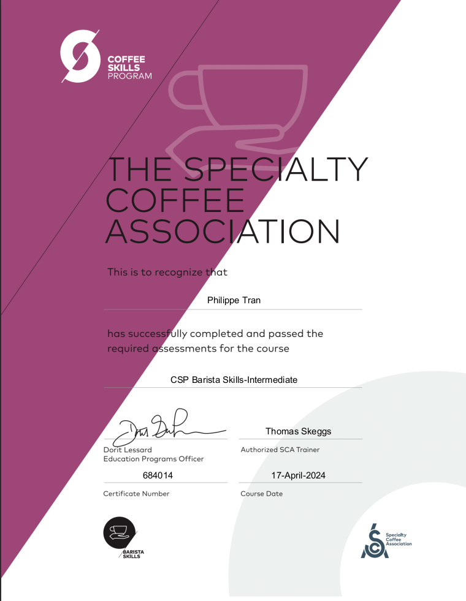
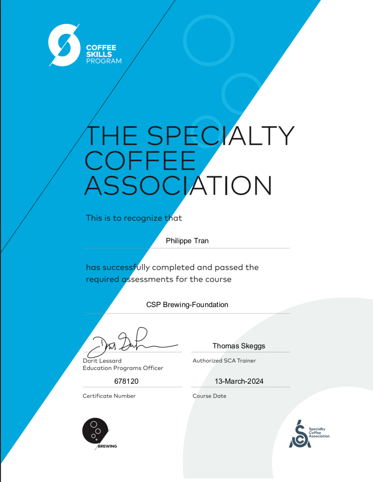
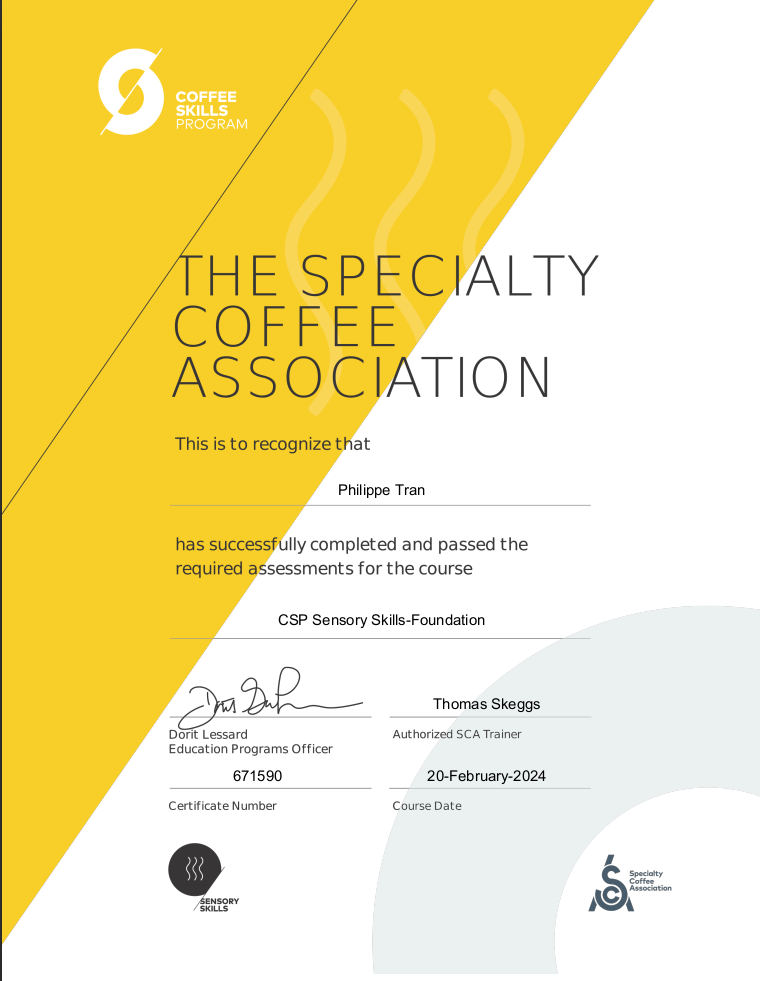
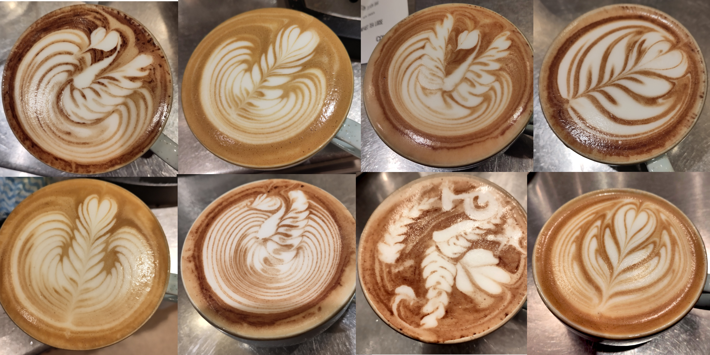

Je m'appelle Philippe Tran, et vous souhaite la bienvenue sur cette page.
J'ai eu une éducation académique atypique, ayant étudié en horaires tronquées toute ma scolarité jusqu'à mon Baccalauréat, et ceci dû au fait que j'ai été formé comme danseur classique, ce qui a été également ma première profession.
Mon parcours est donc prestigieux dans le sens où j'ai étudié dans des établissements de renomée internationale comme l'école de danse du ballet de l'opéra de Paris, ou le conservatoire national supérieur de musique et de danse de Paris, cependant la transition professionelle post vie artistique est rude quand le pôle emploi ne sait pas quoi faire de ma maîtrise des grands écarts.
Une vidéo d'un petit projet chorégraphique auquel j'ai participéAu travers de ma condition et de mes expériences, émerge une appréciation pour l'absurde. Je pense même qu'une explication de la difficulté de s'approprier un sens de la vie se résume d'une manière très à propos en pseudo code:
def trouverSensDeLaVie(experience):
try:
if raisonArbitraire in experience:
return raisonArbitraire
else:
return trouverSensDeLaVie(experience)
except RecursionError:
return experience.add(confusion)
Actuellement je considère me spécialiser dans le café, c'est un milieu intéressant et généralement moral qui satisfait la plupart de mes besoin. Vous trouverez ci-dessous, des certificats qui prouvent mon investissement et mes capacités techniques, mais surtout impressionnent les ressources humaines.
  Un brin plus appréciable, des images de jolis cafés reçus par mes clients:
 revenir en haut en rechargeant la page Le repo github de cette app